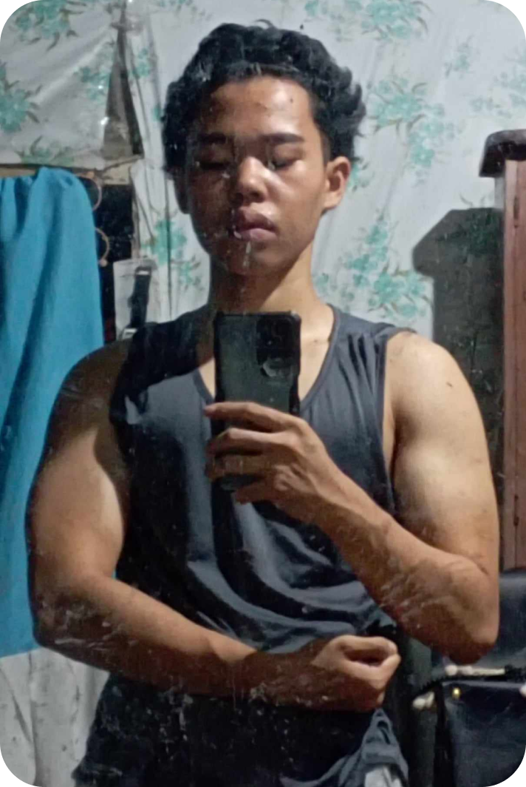

Welcome to my FlexBlog, where I unfold the incredible journey of my body
transformation. This space is not just about physical changes but also
the mental resilience and dedication that fueled this transformative
odyssey.
I delved into the world of calisthenics. This foundational approach to
bodyweight training became the cornerstone of my transformation. From
mastering basic exercises to conquering advanced movements, calisthenics
offered a holistic and sustainable path.